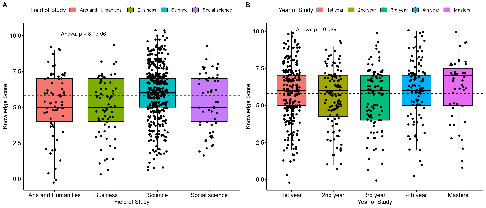
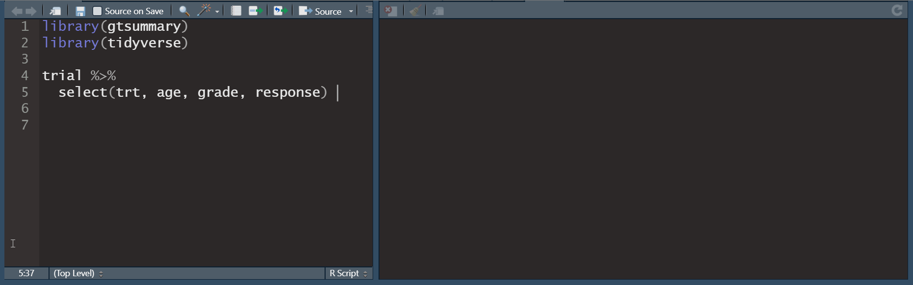
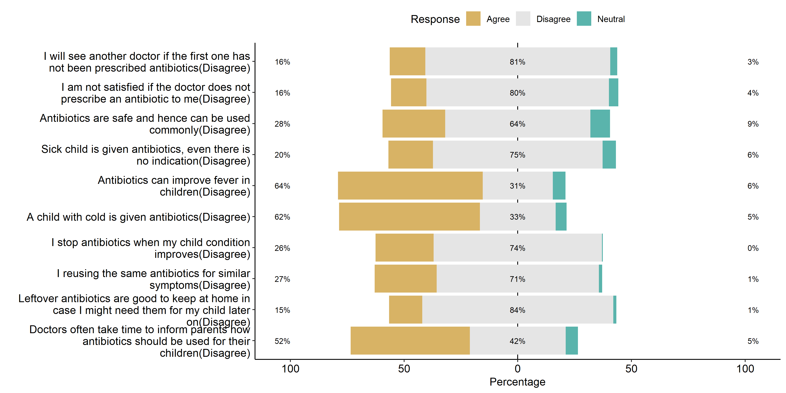
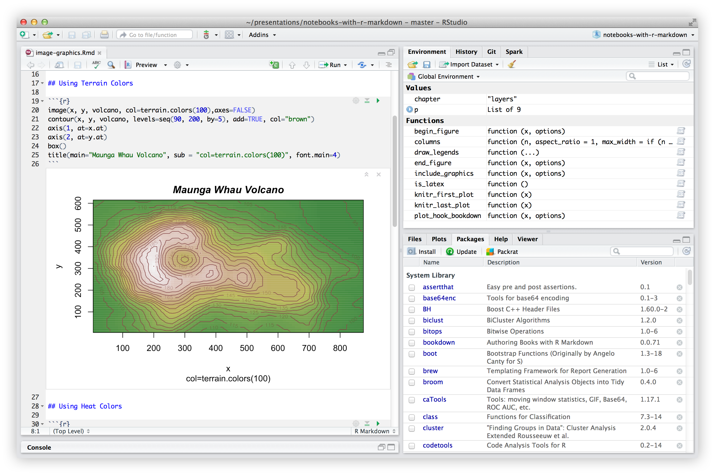

R for Research: A Beginner’s Guide
Center for Health Innovation, Research, Action and Learning – Bangladesh
🗓July 1 - July 15, 2023 | 9:00pm - 11:00pm (Bangladesh Time)
🏨 Medium - Zoom
💥 Register with Google Forms
💥 Registration Fee: 1020BDT (for students), 1530BDT (for professionals)
📝 To join private Telegram group for the course, follow instructions in the email you received after registration.
Overview
The purpose of this course is to provide a practical introduction to the programming language R for researchers in any field. We are convinced that R is a powerful tool that can ultimately make your life easier by enabling efficient solutions to your data analytical problems. Also, R is completely free. Who doesn’t like that?
This course aims to facilitate the participant’s first steps in R and equip them with the tools and understanding to expand their technical know-how according to the needs of their specific research. It is neither a computer science nor a methodological course, but aimed at the practical needs of empirically working researchers.
What is R?
R is an open source language and environment for statistical computing, data mining, modeling, and data graphics. It provides a wide variety of statistical and graphical techniques such as linear and non-linear modeling, statistical tests, time series analysis, classification, and clustering.
Learning outcomes
By the end of the course students you shall be confident and equipped with all the knowledge required to perform analytical activities in R. Specifically,
- Understand the fundamental syntax of R through readings, practice exercises, demonstrations, and writing R code.
- Apply critical programming language concepts such as data types, iteration, control structures, functions, and boolean operators by writing R programs and through examples
- Import a variety of data formats into R using RStudio
- Prepare or tidy data for in preparation for analysis
- Query data using SQL and R
- Analyze a data set in R and present findings using the appropriate R packages
- Visualize data attributes using ggplot2 and other R packages.
Purpose of statistical programming software
Unlike spreadsheet applications (like Excel) or point-and-click statistical analysis software (SPSS), statistical programming software is based around a script-file where the user writes a series of commands to be performed,
Advantages of statistical programming software
Data analysis process is reproducible and transparent.
Due to the open-ended nature of language-based programming, there is far more versatility and customizability in what you can do with data.
Typically statistical programming software has a much more comprehensive range of built-in analysis functions than spreadsheets etc.
Why Do We Need Analytics?
Before an answer to above question, let us see some of the problems and their solutions in R in multiple domains.
Healthcare
Problem: Every year millions of people are admitted in hospital and billions are spent annually just in the admission process.
Solution: Given the patient history and medical history, a predictive model can be built to identify who is at risk for hospitalization and to what extent the medical equipment should be scaled.
Insurance
Problem: Insurance extensively depends on forecasting. It is difficult to decide which policy to accept orreject.
Solution: By using the continuous credit report as input, we can create a model in R that will not only assess risk appetite but also make a predictive forecast as well.
Banking
Problem: Large amount of customer data is generated every day in Banks. While dealing with millions of customers on regular basis, it becomes hard to track their mortgages.
Solution: R builds a custom model that maintains the loans provided to every individual customer which helps us to decide the amount to be paid by the customer over time.
Why R?
- R is a programming and statistical language.
- R is used for data Analysis and Visualization.
- R is simple and easy to learn, read and write.
- R is an example of a FLOSS (Free Libre and Open Source Software) where one can freely distribute copies of this software, read its source code, modify it, etc.
Who uses R?
- The Consumer Financial Protection Bureau uses R for data analysis
- Statisticians at John Deere use R for time series modeling and geospatial analysis in a reliable and reproducible way.
- Bank of America uses R for reporting.
- R is part of technology stack behind Foursquare’s famed recommendation engine.
- ANZ, the fourth largest bank in Australia, using R for credit risk analysis.
- Google uses R to predict Economic Activity.
- Mozilla, the foundation responsible for the Firefox web browser, uses R to visualize Web activity
What you will learn?
Publication-ready Figures
The {ggpubr} package provides some easy-to-use functions for creating and customizing ‘ggplot2’- based publication ready plots. ggplot2, by Hadley Wickham, is an excellent and flexible package for elegant data visualization in R. However the default generated plots requires some formatting before we can send them for publication. Furthermore, to customize a ggplot, the syntax is opaque and this raises the level of difficulty for researchers with no advanced R programming skills.
Publication-ready Tables
The {gtsummary} package provides an elegant and flexible way to create publication-ready analytical and summary tables using the R programming language. The {gtsummary} package summarizes data sets, regression models, and more, using sensible defaults with highly customizable capabilities.

Analysis and Visualization Likert Items
The {Likert} is an R package designed to help analyzing and visualizing Likert type items. It has been developped by Jason Bryer and Kim Speerschneider. This barplot comes from the demo page and has been sent by Carlos Ortega. It allows to analyse the reading attitudes from a panel of people.

Reproducible Academic Writing with Rmarkdown
R Markdown documents are fully reproducible. Use a productive notebook interface to weave together narrative text and code to produce elegantly formatted output. Use multiple languages including R, Python, and SQL.

Required Textbooks
The following books purchased and are avilable at the online book store. We have also a placed a copy of each on reserve at our online library.
- Fundamentals of Biostatistics by Bernard Rosner, Harvard University
- Applied Statistics by PennState Eberly College of Science
- Applied Medical Statistics for Beginners by Dr. Mohamed Elsherif
- Biostatistics by University of Florida
- Introduction to R Programming by Dr. Roger D. Peng
- R for Data Science by Roger D.Peng
- Introduction to Data Science by Rafael Irizarry
- Data Analysis for the Life Sciences by Rafael Irizarry
- Exploratory Data Analysis with R by Roger D.Peng
Blogs for R Programming, Statistics, and Data Analyis
- Programiz - https://www.datamentor.io/r-programming/
- PennState STAT 484 - https://online.stat.psu.edu/stat484/
- PennState Topics in R Statistical Language - https://online.stat.psu.edu/stat484/
- Simply Statistics - https://simplystatistics.org/
- TutorialPoint - https://www.tutorialspoint.com/r/index.htm
- R for Biologists - https://www.rforbiologists.org/
- Computational Genomics with R - https://compgenomr.github.io/book/
- Stat and R - https://statsandr.com/
- Rafa Lab - https://rafalab.github.io/pages/harvardx.html
- University of Florida - https://bolt.mph.ufl.edu/software/r-phc-6055/
Datasets
Required software
- R: http://www.r-project.org/ (FREE)
- RStudio (additional libraries required): http://www.rstudio.com/ (FREE)
Recording of classes
Class lectures will be recorded automatically using cloud. The links will be posted to CHIRAL Classes when they are available.
Prework
Before attending the workshop please have the following installed and configured on your machine.
Recent version of R
Recent version of RStudio
Most recent release of the gtsummary and other packages used in workshop.
instll_pkgs <- c("gtsummary", "tidyverse", "gapminder", "ggpubr", "likert", "skimr", "car") install.packages(instll_pkgs)Ensure you can knit R markdown documents
- Open RStudio and create a new Rmarkdown document
- Save the document and check you are able to knit it.
Instructor
Bio
 Md. Jubayer Hossain is the Founder, Management Lead and Data Analyst at CHIRAL Bangladesh. CHIRAL Bangladesh is a non-profit organization dedicated to health research to improve lives in Bangladesh. He aspires to maximize the quality of life of people around him by working at the intersection of education, technology, and health research. His research interests include public health, health data science, remote sensing, GIS applications in health, and machine learning in healthcare. He has been teaching programming, data analysis, data science, and research methodology since 2020 in CHIRAL Bangladesh. Detailed research and teaching activities were found on his website.
Md. Jubayer Hossain is the Founder, Management Lead and Data Analyst at CHIRAL Bangladesh. CHIRAL Bangladesh is a non-profit organization dedicated to health research to improve lives in Bangladesh. He aspires to maximize the quality of life of people around him by working at the intersection of education, technology, and health research. His research interests include public health, health data science, remote sensing, GIS applications in health, and machine learning in healthcare. He has been teaching programming, data analysis, data science, and research methodology since 2020 in CHIRAL Bangladesh. Detailed research and teaching activities were found on his website.
Skills
Programming Languages: Python, R, SQL, Julia, JavaScript; Data Science: scikit-learn, PyCaret, Dask, PySpark; GIS & Remote Sensing: ArcGIS, Geopandas, Xarray, Giovani; Analytics Softwares: SPSS, PowerBI, Microsoft Excel; Survey Tools: RedCap, KoboToolBox, EpiCollect, Google Forms; Academic Writing Tools: Microsoft Word, LaTeX, Mendeley; Bioinformatics: BioPython, Bioconductor, BioPandas, Galaxy, NGS, RNASeq, ssRNASeq; Miscellaneous Skills: UNIX, Version Control(Git), Web Scraping, APIs.
Publications
- Hossain, M.J., Islam, M.W., Munni, U.R. et al. Health-related quality of life among thalassemia patients in Bangladesh using the SF-36 questionnaire. Scientific Reports 13, 7734 (2023). https://doi.org/10.1038/s41598-023-34205-9
- Towhid, S. T., Hossain, M. J., Sammo, M. A. S., & Akter, S. (2022). Perception of Students on Antibiotic Resistance and Prevention: An Online, Community-Based Case Study from Dhaka, Bangladesh. European Journal of Biology and Biotechnology, 3(3), 14–19. https://doi.org/10.24018/ejbio.2022.3.3.341
- Hossain, M.J., Towhid ST, Sultana S, Mukta SA, Gulshan R, Miah MS (2022). Knowledge and Attitudes towards Thalassemia among Public University Students in Bangladesh. Microbial Bioactives, 5(2), https://doi.org/10.25163/microbbioacts.526325.